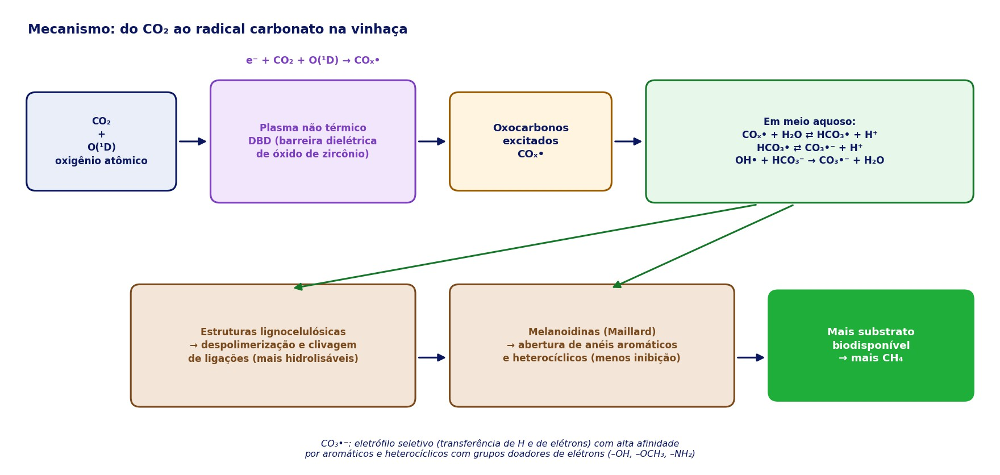
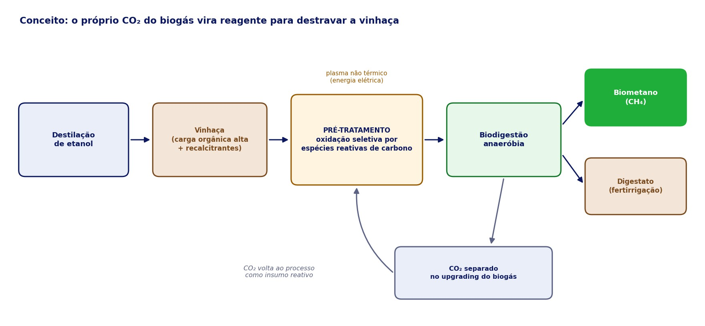
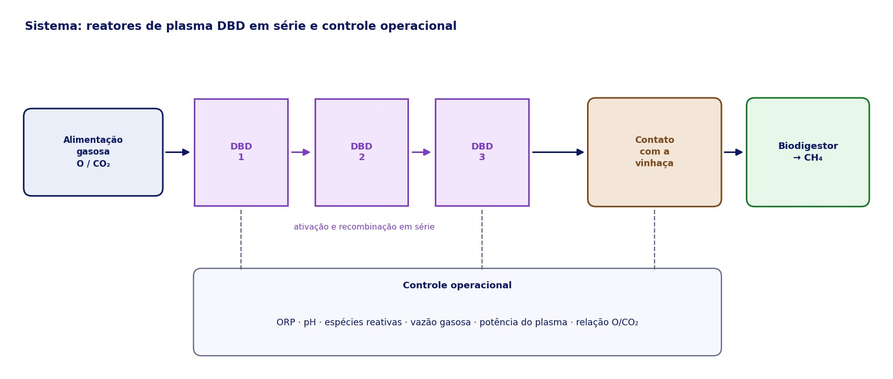
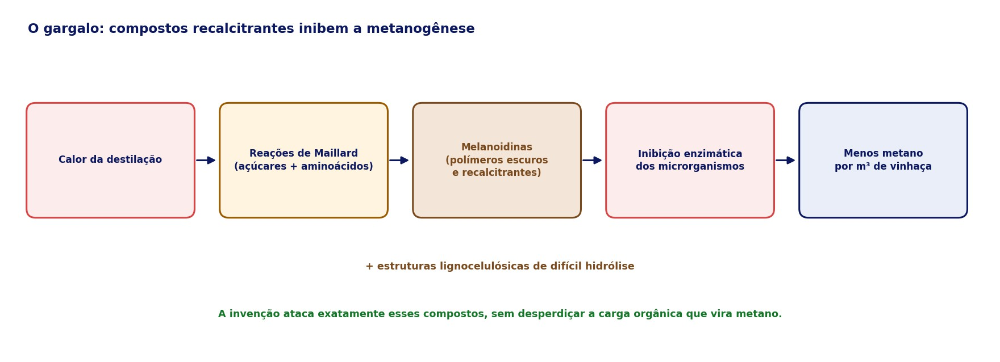
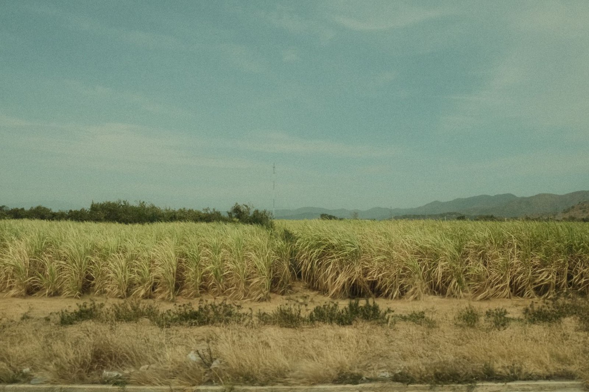

O problema que resolve
A vinhaça do etanol tem alta carga orgânica e é usada para produzir biogás e biometano, mas a biodigestão rende menos do que poderia. O calor da destilação forma melanoidinas, polímeros recalcitrantes que inibem os microrganismos, e estruturas lignocelulósicas difíceis de hidrolisar agravam o problema.
Os pré-tratamentos existentes (ozônio, persulfato, peróxido) oxidam sem seletividade: consomem muito reagente e destroem também o substrato que viraria metano.
Como funciona
Uma mistura de oxigênio atômico e CO₂ passa por uma descarga por barreira dielétrica (DBD), gerando espécies reativas de carbono. Em contato com a vinhaça, elas formam radicais carbonato (CO₃•⁻).
Esses radicais são eletrófilos seletivos: têm alta afinidade por anéis aromáticos e heterocíclicos, como os das melanoidinas e da lignina, e pouco efeito sobre a matéria orgânica simples.
O mecanismo

Integração à usina
O POS é instalado antes do biodigestor e usa como insumo o CO₂ separado no upgrading do biogás para biometano, que antes era descartado.

Oxidação convencional × seletiva
- Despolimeriza estruturas lignocelulósicas, tornando-as mais fáceis de hidrolisar.
- Degrada melanoidinas e produtos das reações de Maillard, reduzindo a inibição.
- Preserva a matéria orgânica que será convertida em metano.

O sistema
Dois ou mais reatores de plasma DBD em série, com alimentação de oxigênio atômico e CO₂, posicionados antes do biodigestor. A operação é controlada por potencial de oxirredução (ORP), pH, concentração de espécies reativas, vazão gasosa, potência do plasma e relação O/CO₂.

Onde se aplica
- Usinas sucroenergéticas com biodigestão de vinhaça e produção de biogás ou biometano.
- Substratos com melanoidinas ou lignocelulose que limitam a digestão anaeróbia.
Outras aplicações do POS em estudo (outros efluentes ou substratos com compostos aromáticos recalcitrantes).
Diferenciais
- Oxidação seletiva: menos reagente e sem destruir o substrato útil.
- Usa o CO₂ separado no upgrading do biogás, que hoje é descartado.
- Economia circular e redução de emissões de gases de efeito estufa.
- Mais biometano a partir do mesmo resíduo.
Resultados e próximos passos
- Ganhos esperados: maior biodegradabilidade da vinhaça, maior produção específica de metano e/ou menor tempo de retenção no biodigestor.
- Base técnica para ensaios de potencial bioquímico de metano (PBM) e escalonamento.
- Validação planejada em escala de bancada e piloto.
Resultados de ensaios de PBM e do piloto, quando disponíveis.
Propriedade intelectual
Patente de invenção depositada, com 10 reivindicações que cobrem:
- o método de ativação por DBD, geração de espécies reativas de carbono e oxidação seletiva;
- a aplicação à vinhaça, a modificação de melanoidinas e a degradação de lignocelulose;
- o sistema com reatores DBD em série, alimentação gasosa e controle operacional;
- o uso para intensificar a digestão anaeróbia e aumentar a produção de metano.
Número do pedido, data de depósito e situação.
Indicadores econômicos
Ganho de biometano por m³ de vinhaça, receita adicional estimada, consumo de energia do plasma, CAPEX e prazo de retorno.
Imagens



Cases relacionados
Outras tecnologias GETA
Tratamento de Chorume
Processos físico-químicos avançados sem dependência de sistemas biológicos.
Desaguamento e Inertização de Lodos
Rota tecnológica baseada em reações de encapsulamento químico de metais.
CDR de Alta Performance
Elevado poder calorífico e baixa umidade em combustível derivado de resíduos.
Quer aplicar uma dessas tecnologias?
Avaliamos o seu efluente ou resíduo e indicamos a rota mais adequada, com ensaio de tratabilidade.